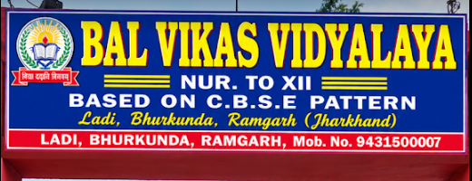

School education
Support learning through school and senior secondary stages.
ABOUT THE SCHOOL
Bal Vikas Vidyalaya · Ladi, Bhurkunda, Ramgarh, Jharkhand

SINCE
UDISE code:
Support learning through school and senior secondary stages.
Explore computer learning and participation beyond lessons.
Connect with the administration about further education after Class XII.
LET’S TALK
Contact the administration about schooling, computer classes, or higher-study guidance.